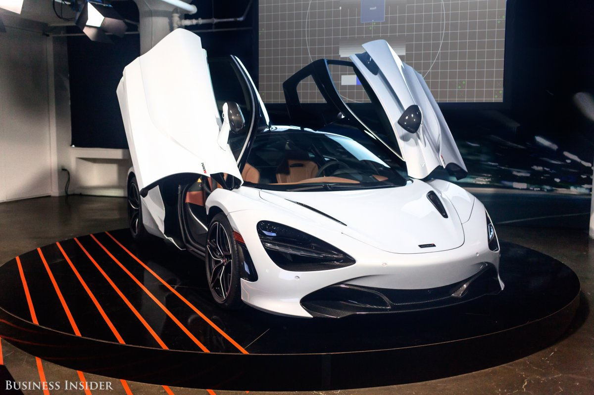

2017 Bugatti Chiron
The all-new, gut-punchingly expensive Bugatti Chiron (which reportedly starts at $2.6 million but almost certainly doesn't stop there, given the nearly endless customization options) isn't even the fastest Bugatti road car in existence—at "just" 261 mph, Bugatti's newest model is the slower than its outgoing, 267-mph Bugatti Veyron 16.4 Super Sport. Of course, the Chiron's 8-liter, quad-turbocharged, 1,500-hp W-16 engine is electronically limited to 261 mph; remove that limiter for a top-speed run, like the brand initially did with its various Veyron iterations, and you can bet the Chiron will keep climbing. (Plus, as with the Veyron, Bugatti is sure to keep pushing the top speed limits skyward with each successive Chiron variant.) A couple things are for sure: first, Bugatti is very interested in claiming—or keeping, depending on how you keep score in the murky world of top-speed records—the title of "world's fastest production car"; next, they definitely want their newest model to eventually hold that title over an aged-out car, because it's hard to get well-heeled customers to part with several million dollars for a new car if it's only second-best to the old one. So while 261 mph is the stated top speed for the Chiron, the truth is that no one really knows how fast this car can go—but the most likely answer is "faster still." In any case, the 2017 Bugatti Chiron rightfully claims the title of the fastest new car in the world in 2017.  Link to Manufacturer's Car Website
Link to Manufacturer's Car Website
Picture of the guy who can afford this.

Picture of the guy who can afford this.
Aston Martin Valkyrie
The hypercar collaboration between Aston Martin and Red Bull Racing—originally known as the AM-RB 001, now re-christened Valkyrie—has yet to have its stated 250 mph top speed tested in the real world (or, if it has, that hasn't been made public), but we're going to go out on a limb and trust that this machine can do what its creators say it can. After all, the Valkyrie boasts the right parts: a hybrid propulsion system in addition to its naturally-aspirated, Cosworth-built 6.5-liter V-12 engine, plus a seven-speed dual-clutch automatic transmission by Ricardo, the same company that builds the Bugatti Chiron's dual-clutch set-up. Not only that, but the space-age Valkyrie can apparently generate over 4,000 pounds of downforce even without a proper fixed rear wing, has a dry weight of just 2,200 lbs thanks to carbon-fiber tub construction, and can reportedly hold an insane four Gs of lateral acceleration while cornering—double what the bonkers McLaren P1 can hold. So, yes, many of these figures are untested as yet, but neither Aston nor Red Bull Racing are exactly known for vaporware, so we're giving going to go ahead and say that the Valkyrie will hit 250 mph, no problem.  Link to Manufacturer's Car Website
Link to Manufacturer's Car Website
Lamborghini Aventador S
The Lamborghini Aventador was perhaps the first grown-up, no-compromises, compete-with-the-big-boys-on-every-level modern supercar from the bomb-throwers in Sant'Agata (a feat continued and arguably bested with the later Húracan models) when it debuted in 2011, and the 2018 Aventador S, which bowed in Geneva, promises a truly bonkers orgy of speed and aggression. A full 20 percent lighter than the outgoing model, at 3,472 pounds, the new Aventador is motivated by an uprated version of the old model's 6.5-liter V-12 with 740 horsepower and 509 lb-ft of torque. The sprint to 60 mph takes just 2.9 seconds, and the top speed is a breathtaking 217 mph—comparable to the insane 2017 Lamborghini Centenario. Like that car, the 2018 Lamborghini Aventador features a trick four-wheel-drive steering system that points the rear wheels in the opposite direction of the front rubber at low speeds and in the same direction at high speeds, supposedly delivering the driving characteristics of a car with a wheelbase shorter by 9.8 inches, or longer by 19.7 inches—whichever works better. A truly off-the-wall bit of engineering. And we mean that as a compliment.  Link to Manufacturer's Car Website
Link to Manufacturer's Car Website
Ford GT
The 2017 Ford GT is one of the most anticipated cars of this or any year. The GT name has the Le Mans (and Ferrari)-dominating history, the reputation as the baddest car to come out of the U.S. in decades, and, to bring things full circle, proper international sports-car racing dominance in the modern era. It's a name with impeccable pedigree, and Ford did right by it with this new, approximately $450,000 supercar: 647 horsepower and 550 lb-ft from its twin-turbo, 3.5-liter V-6 developed by Ganassi Racing for the team's Daytona Prototype; active aerodynamics that help generate 400 pounds of downforce at 150 mph; an anti-lag system that keeps the turbos spinning at around 80,000 even off-throttle (and at full boost they go like hell at up to 176,000 rpm); and an FIA-approved roll cage in the production version that's nearly identical to the one used in the Le Mans-winning race car. Also, did we mention it hits a top speed of 216 mph?  Link to Manufacturer's Car Website
Link to Manufacturer's Car Website
McLaren 720S
McLaren's first (and, for many years, only) foray into road cars, the F1 of the 1990s, is still widely considered the greatest car ever made, so it's safe to say the company has a lot to live up to. And its most recent offerings have shown an incredibly fast maturing process since jumping back into the game with the MP4-12C in 2011—most notably with the incredible new top-of-the-line McLaren 720S. The $288,475 mid-engined supercar hits 212 mph thanks in part to some insane aerodynamic trickery and, of course, the 4.0-liter V-8, enlarged from 3.8 liters in the outgoing McLaren 650S, with its explosive 710 horsepower and 568 pound-feet of twist. Gear changes from the seven-speed dual-clutch transmission are up to 45 percent faster than in the 650S, too, and the numbers only get more ludicrous from there: 2.8 seconds to 60 mph; 7.8 seconds to 124 mph; a 10.3-second quarter-mile; and zero to 186 mph in just 21.4 seconds. As the English say, Blimey!  Link to Manufacturer's Car Website